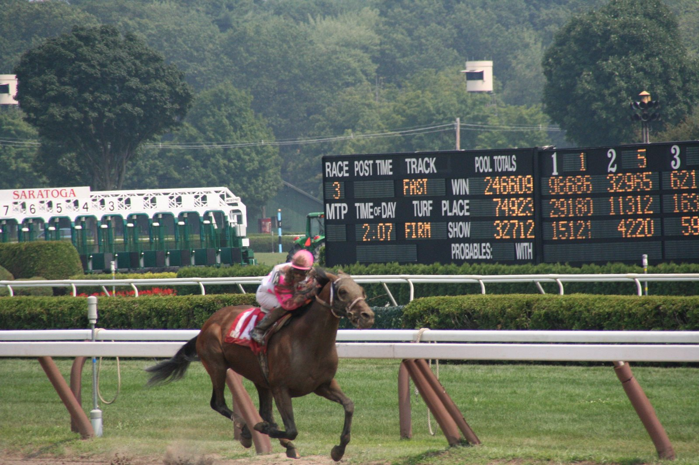

Tattersalls abre el Book 1 con un medio hermano de Blue Bolt en el ring
El Book 1 de la October Yearling Sale de Tattersalls arranca este martes en Newmarket. Uno de los lotes señalados del primer día es el 106: un potro de Baaeed, medio hermano de Blue Bolt, que el sábado ganó las Sun Chariot Stakes y suma cuatro Grupo 1 esta temporada.

El Book 1 de la October Yearling Sale de Tattersalls arranca este martes en Newmarket. Uno de los lotes señalados del primer día es el 106: un potro de Baaeed, medio hermano de Blue Bolt, que el sábado ganó las Sun Chariot Stakes y suma cuatro Grupo 1 esta temporada.
Lo vende Cotton House Bloodstock, de Brendan Hayes, que lleva a Newmarket solo este potro y que en su día vendió a Blue Bolt a Juddmonte. "Es el trabajo de toda una vida", resume Hayes, que lleva casi cincuenta años con la familia de Arctique Royale, ganadora de las 1.000 Guineas irlandesas de 1981. "Si me la hubiera quedado, habría ganado probablemente un Grupo 3 y la habría parado", admite sobre la yegua, preparada por Andrew Balding.
De otra de las familias con las que trabaja Hayes, la de Mill Princess, sale Ten Bob Tony, ganador este año de las Queen Anne Stakes.
Cerca del final de la venta aparece otro lote con historia: el 464, una potranca de Blue Point medio hermana de Sun Goddess, que con dos años ya suma tres Grupo 1. La presenta John Tuthill, de Owenstown Stud.
Para Matt Prior es su primer Book 1 como director gerente de Tattersalls. "El componente internacional de nuestro deporte está más presente que nunca", señala. Prior cita la ampliación del programa de hierba en Estados Unidos, a los compradores australianos y a los de Oriente Medio.
— Redacción de Galope al Día